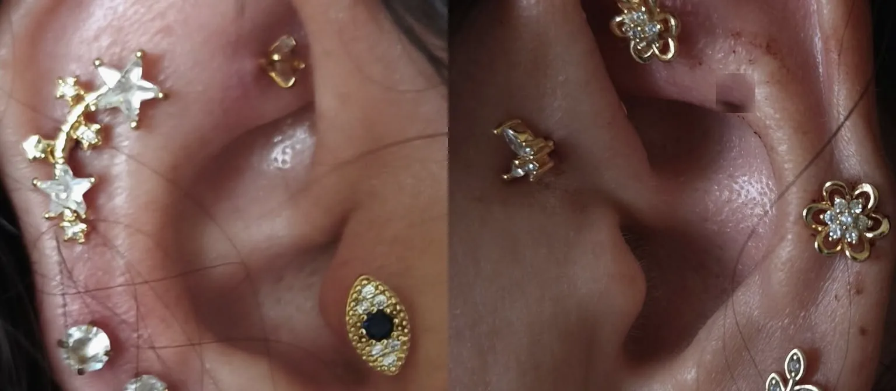

Fülbelövés már csecsemőkortól
Pici fülbevaló, nagy öröm. Gyorsan és kíméletesen, babáknak, gyerekeknek és felnőtteknek — nem kell időpontot foglalnod, gyere be nyitvatartási időben.
Kérdezz Messengeren
Piercingszalon · Kiskunfélegyháza, Holló Béla u. 1.
Fülbelövés már csecsemőkortól, időpont nélkül. Divat- és közérzetjavító piercingek steril eszközökkel és antiallergén ékszerekkel — egy tiszta, nyugodt szalonban.

Szolgáltatások
Pici fülbevaló, nagy öröm. Gyorsan és kíméletesen, babáknak, gyerekeknek és felnőtteknek — nem kell időpontot foglalnod, gyere be nyitvatartási időben.
Kérdezz Messengeren
Helix, tragus, daith és még sok más — bőrbarát, implantátum minőségű ékszerekkel. Segítek kiválasztani, mi illik hozzád és a füledhez.
Kérdezz Messengeren
A fülkagyló hagyományosan ismert pontjaira helyezett piercingek, amelyeket sokan a közérzetük támogatására választanak. Előtte mindig átbeszéljük, mi a célod.
Árak
Miért Judit?
Nálam a piercing nem gyors munka. Meghallgatlak, segítek választani, és elmagyarázom, hogyan vigyázz az új ékszeredre. Steril, egyszer használatos eszközökkel dolgozom, és antiallergén, implantátum minőségű ékszert kapsz. A tested egyedi — a figyelmem is az.
Árak
Az ár minden esetben tartalmazza az ékszert és egy utókezelő gélt.
Két piercing egy ülésben: 3 000 Ft kedvezmény
A közérzetjavító piercingek nem orvosi kezelések, és nem helyettesítik az orvosi ellátást. Fülbelövés és divatpiercing áráért írj nekem Messengeren.
Így zajlik
Elmondod, mit szeretnél — én segítek a pont és az ékszer kiválasztásában, és válaszolok minden kérdésedre.
Steril, egyszer használatos eszközökkel, nyugodt tempóban. Néhány perc az egész, gyerekeknél is.
Kapsz egy utókezelő gélt és pontos útmutatót. Minden frissen szúrt piercing mellé fényterápiát adok ajándékba.
Rólam
A Judit Gold a piercingszalonom és ajándékboltom Kiskunfélegyházán. Szakértelem, higiénia és biztonság — ezt kapod nálam, és egy kis figyelmet, ami jól esik.
Judit
Ékszerek és ajándék
Bőrbarát fülbevalók, nyakláncok, karkötők és szettek — ajándéknak vagy magadnak. Gyere be és nézd meg a vitrineket.


Szerdától szombatig 3 ékszer vásárlásakor a legolcsóbb ajándék.
Kapcsolat
Nyitvatartás és időpont: írj Messengeren, gyorsan válaszolok.